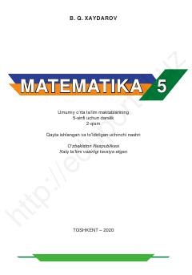

M55-sinf o'quvchilari uchun matematika fanidan 2-qism darslik.
Mazkur darslik umumiy o'rta ta'lim maktablarining 5-sinf o'quvchilari uchun mo'ljallangan bo'lib, matematika fanidan nazariy ma'lumotlar, qoidalar va amaliy topshiriqlarni o'z ichiga oladi. Kitobda oddiy va o'nli kasrlar, fazoviy geometrik shakllar hamda ma'lumotlar tahlili kabi mavzular batafsil yoritilgan.